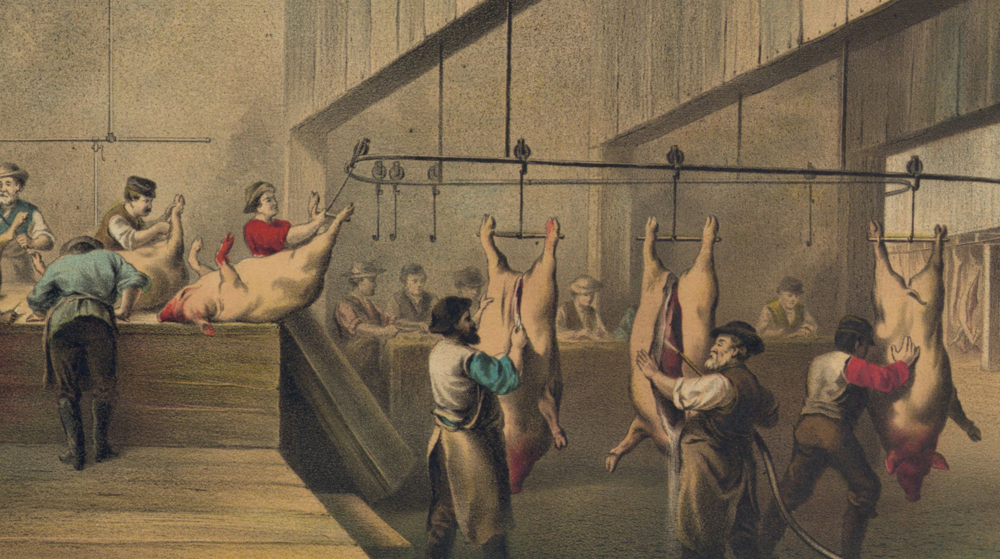
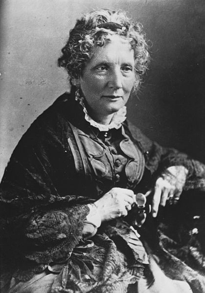
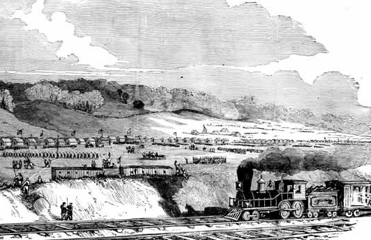

|
Today the third largest city in Ohio, Cincinnati ranked among the most prominent
American metropolises of the nineteenth century. It was the home of the first full-time,
salaried municipal fire department of the United States, formed in 1853; the first Jewish
hospital, established in 1850; and one of the first public transport systems—a series of
streetcar lines built in 1859. The city played a prominent role in the antebellum and
Civil War eras, serving as a hotbed of abolitionist activity and a safe haven for slaves
escaping along the Ohio River, and an important training and supply center during the war.
Founded in 1788 by John Cleves Symmes and Colonel Robert Patterson, Cincinnati was
given its name in 1790 by Arthur St. Clair. St. Clair served as both the governor of the
Northwest Territory to which the settlement belonged, and as president of the Society of
Cincinnati, a group that honored military men who returned to civilian life after the
revolution in the same way the Roman general Cincinnatus had done. George Washington was
|

An artist's depiction of "Porkopolis"
|
considered the modern Cincinnatus, in fact, and the nearby fort built in 1789 to protect
the settlers of the Northwest Territory was named in his honor. Many Revolutionary War
veterans were granted land in the area in exchange for their service; their descendants
remain prominent in the area to the present day. In 1790 St. Clair also established the
city as the county seat of Hamilton County, a position it still holds.
Ohio entered the Union in 1803 and Cincinnati was able to incorporate as a city in 1819
after the advent of steam navigation on the Ohio River brought in many new residents.
Cincinnati prospered as a boomtown thanks to the slaughterhouse business, and by 1835, the
city was known colloquially as 'Porkopolis.' Cincinnati's status as one of the largest and
most sophisticated metropolises in the country—home to 115,000 citizens by 1850—made it a
worthwhile stop on European opera singer Jenny Lind's American tour in April 1851. By that
time, civic pride had grown to the point that residents of Cincinnati were referring to
their hometown the "Queen City."
As Cincinnati was one of the first free state stops along the Ohio River, and was
directly across the river from the slave state of Kentucky, it was the original
destination for many runaway slaves who traveled the Underground Railroad. This also made
it home to many slave-catchers, emboldened by the Fugitive Slave Act of 1850 to capture
runaways for profit. The city was home to many famous abolitionists including Levi and
Catherine Coffin, politician Salmon P. Chase, and author Harriet Beecher Stowe. Stowe
acknowledged that her politically-charged antislavery novel, Uncle Tom's Cabin, was
|

Harriet Beecher Stowe, whom Abraham Lincoln referred to
as "the little lady who made this big war."
|
inspired by runaway slaves that she encountered in the city. Coffin was renowned for
speeches against slavery, as well as his work as "president" of the Underground Railroad.
Chase served Abraham Lincoln as Treasury Secretary and later became the sixth Chief
Justice of the Supreme Court, a position he held from 1864 until his death nine years
later.
When the Civil War broke out, thousands of Cincinnatians volunteered for service in the
Union Army. This included, most notably, the members of the 9th Ohio Infantry, the first
all-German unit to enter the Union Army. The city provided $250,000 to equip the 9th Ohio.
In late 1861, under the guidance of Cincinnati resident and Maj. Gen. George B. McClellan,
the Union Army established Camp Dennison, a major recruitment and training depot. Nearly
50,000 Union soldiers received their basic training there.
Beyond recruiting and training soldiers, Cincinnati's proximity to the Western theater
of the Civil War made it optimal for other logistical purposes. The city's shipyards along
the Ohio River were an important source of gunboats and other Union Navy vessels. Boilers,
armor plating, and cast iron cannons were also manufactured in Cincinnati. The city was a
key distribution point for grain, pork, beef, other food, and military supplies to the
Union armies. It was also home to several soldiers' hospitals, most importantly the Good
Samaritan Hospital, and it hosted the Cincinnati Sanitary Fair of 1863, which raised more
than $400,000 for the Union war effort. Cincinnati served as Maj. Gen. Ambrose Burnside's
headquarters during most of 1863 and 1864, and was the site of numerous military
courts-martial and trials of civilians accused of treason, most notably that of Ohio
Copperhead Clement Vallandigham.
Cincinnati's resources and location made it an attractive target for the Confederate
Army, but it was threatened by invasion only once. In September 1862, Confederate Brig.
Gen. Henry Heth moved north from Lexington, Kentucky towards the city, aided by cavalry
|

An engraving of Camp Dennison
|
under the command of Brig. Gen. Albert G. Jenkins. Under the leadership of Maj. Gen. Lew
Wallace, 22,000 Union troops and 50,000 local volunteer militiamen (known as the "Squirrel
Hunters") rallied to the city's defense. The Confederates thought better of their planned
attack and retreated without an engagement, earning Wallace the sobriquet "Savior of
Cincinnati." And extensive series of 27 earthwork forts and batteries was constructed
around Cincinnati thereafter, but the Confederates never made another serious advance upon
the city.
Once the Civil War was over, Cincinnati was a major depot for Federal troops to
disembark from river steamers and reenter civilian life. In the decades immediately
following the war, it remained an important American metropolis (though it permanently
ceded some of its economic might to Chicago during the war). Among the notable postwar
landmarks was the founding of the nation's first professional baseball team (the
Cincinnati Red Stockings, 1869), first municipal university (the University of Cincinnati,
1870), and first female-owned large-scale manufacturing operation (Maria Longworth Nichols
Storer's Rookwood Pottery, 1880). It was not until the early decades of the twentieth
century, with its primary industries having moved northward and/or westward, that
Cincinnati dropped out of the first rank of American cities.
Source: Christopher Bates for the History 139A website.
|